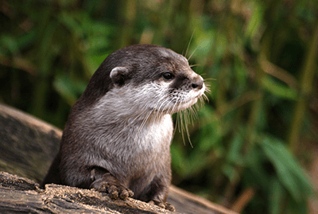
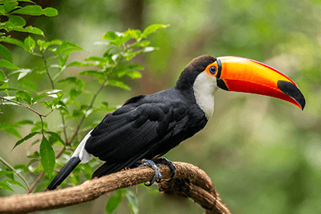
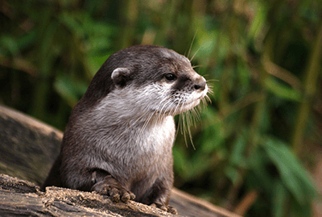
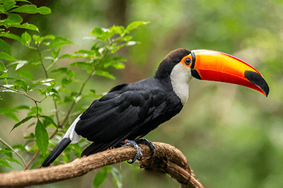

Amazônia
A Amazônia abriga uma das maiores diversidades biológicas do planeta, com espécies únicas e ainda desconhecidas pela ciência. Desde as árvores gigantes até os menores insetos, cada ser vivo da floresta desempenha um papel importante no ecossistema.
 


